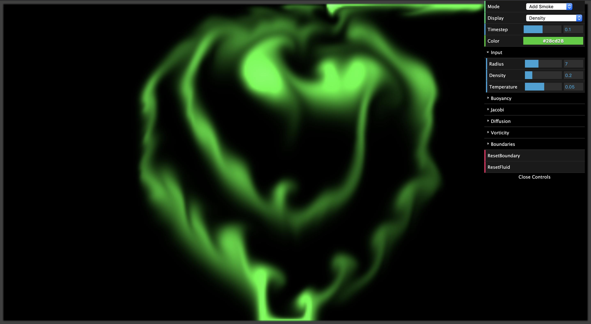
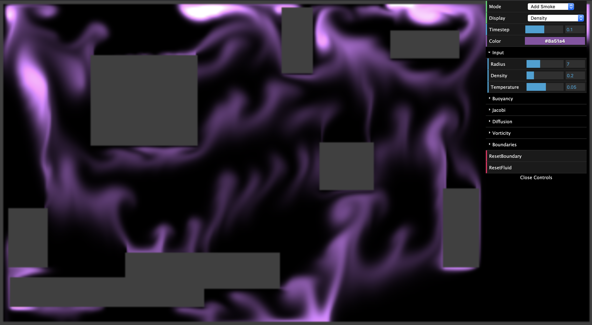
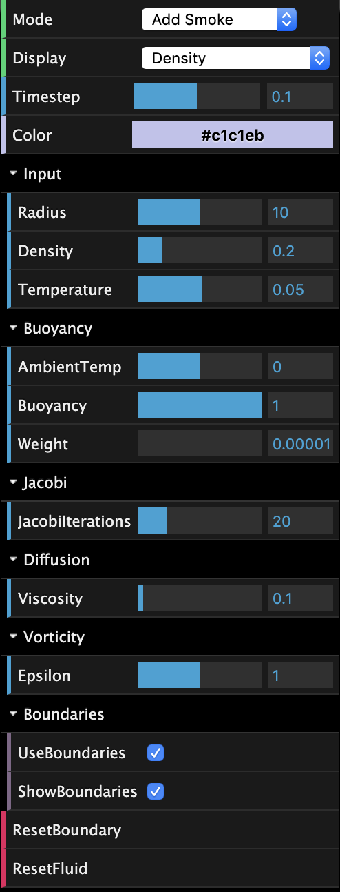

Previously: Milestone Status Report
For our final project, we implemented a 2D fluid simulator using Three.js, which uses WebGL for rendering graphics. We used the Navier-Stokes equations to model the fluid behavior. Our implementation uses a 2D grid in order to keep track of the system dynamics as time passes, and a variety of fragment shaders extract information from the grids in order to produce a visual representation of fluid. Our simulation responds to user input, and there is a GUI available in order to manipulate different parameters of the system to achieve different results. The simulation can be found here.
There are four fluid properties for which we track for rendering purposes: velocity, pressure, density, vorticity, and temperature. Temperature is solely used in order to affect the buoyant force - the hotter the temperature is, the more buoyant we expect the fluid to behave. The rest of the properties all affect how the fluid shows up on the screen and is ultimately tracked in the density property. In Three.js, these are represented as textures. Each property is associated with two textures - for buffering purposes - in order to allow reading from and writing to it simultaneously. We swap the two textures after each operation.
fluid has velocity, so it transports other quantities along with it, such as density. For example, if we have colored fluid, the color is carried along with the fluid; the color is transported, or advected, along the fluid's velocity field. Advection is represented by the first term on the right hand side of the equations above. In order to compute the effect of advection on the velocity field at each time step, we update the velocity of each point in our grid. Because Euler's explicit integration method is unstable for large time steps, we use an implicit method and trace the trajectory of a particle from each grid cell back in time to its former position and copy the quantities at that position to our starting grid cell. This advection update is described by the following equation, and can be applied to a variety of quantities \(\mathbf{x}\). In our simulation, we have applied it to velocity, temperature, and density.
\[q(\mathbf{x}, t + \delta{t}) = q(\mathbf{x} - \mathbf{u}(\mathbf{x}, t)\delta{t}, t)\]Particles in a system move around each other. When a force is applied to a fluid, the particles closest to the source of the force push on the ones that are farther away. Over time, pressure builds up. This leads to acceleration, which is represented by the second term in the Navier Stokes equation. We will solve the pressure part of the equation using an iterative relaxation technique called Jacobi iteration, which is described in more detail in the diffusion section below, which also uses the same technique.
Viscous fluids have a resistance to flow, which results in dissipation of velocity over time. The equation modelling diffusion is represented by the third term in the Navier Stokes equation. Like the case for advection, the explicit Euler method is unstable. Instead, we use an implicit formulation:
\[(\mathbf{I} - v\delta t\nabla^2)\mathbf{u}(\mathbf{x},t + \delta{t}) = \mathbf{u}(\mathbf{x},t)\]This equation is essentially a Poisson equation, which can be solved using an iterative relaxation technique called Jacobi iteration. This technique starts with an approximate solution and improves it every iteration. We discretize and rewrite the above equation into
\[x_{i,j}^{(k+1)} = \frac{x_{i-1,j}^{(k)}+x_{i+1,j}^{(k)}+x_{i,j-1}^{(k)}+x_{i,j+1}^{(k)}+\alpha b_{i,j}}{\beta} \]Local or body forces are incorporated into the simulation here. In our simulation, local forces are applied to a specific portion of the particles via user clicks, which initiate the fluid. Body forces are applied evenly to the entire fluid. In our simulation, we include a buoyant body force to represent the evaporation of fluid.
The motion of low-viscosity fluids contains some sort of rotational force, also known as vorticity. Normally, simulation on a grid dampens out these effects, so we add them back into our simulation using vorticity confinement for more prominent effects.
First, we compute the vorticity \(\mathbf{w} = \nabla \times \mathbf{u}\)
. Then, we compute a normalized vorticity vector field: \[\Psi = \frac{\eta}{|\eta|}, \eta = \nabla|\omega|\]From here, we can compute a correction force to restore the amount of voriticity that is estimated to have dissipated:
\[f_{vc} = \epsilon(\mathbf{\Psi} \times \omega)\delta x\]Since we are solving a differential equation in a finite domain, we must apply boundary conditions, which determine how to compute values at the edges of our display. During each time step, we update the velocity and pressure quantities, which means that we need to define boundary conditions for both properties. For velocity, we assume that the velocity goes to zero at the edges since we are simulating a fluid in a box. Thus, it cannot flow through the sides of the display. For pressure, the correct solution to the Poisson equation requires pure Neumann boundary coniditons, which means that at a boundary, the rate of change of pressure in the direction normal to the boundary is zero.
We also implemented arbitrary boundaries in our simulation. Users in the GUI are able to create arbitrary obstacles. In order to implement this, we determined for each cell, in which directions the boundaries lie in order to compute the correct boundary values.
A challenge that we faced was that our starter framework from the Smoke Tutorial we followed was very simplistic. For example, the buoyant force was faked by adjusting some weights such that the simulation looked "correct" - it wasn't necessarily based on physical laws. Our implementation was also hard to debug in the beginning when we weren't familiar with how our project was to be done. We didn't know how to test shaders, so we wrote a lot of our code in the beginning and then went back to debug. We tackled our debugging issue by reading the equations very carefully and making sure that our variables corresponded to the correct things.
In retrospect, the biggest takeway from this project was the difficulty of simulating real life on computers with graphics. This was something that we felt even at the beginning of the course when we learned about rasterization and sampling artifacts, but it was made much more apparent through this fluid simulation. We were also able to interface with a real-world example of how Euler's implicit method for solving differential equations is impractical and instable. Through this project, we have gained much more appreciation for computer games that are able to display realistic scenes.
Running the simulation is the best way to see our results, but a couple of screenshots have been added below for a quick overview.
|  |  |  |
Sharie: Initial framework setup and starter code, projection shaders, shader debugging, midway and final report + slides
Shannon: Wrote the advection, divergence, gradient, boundary, vorticity, and display shaders. Added parameters, the reset buttons, and dynamic boundary creation to the GUI.
Shubha: shaders for buoyancy, adding external velocity, density, and temperature; visualizer GUI; midway and final videos + slides